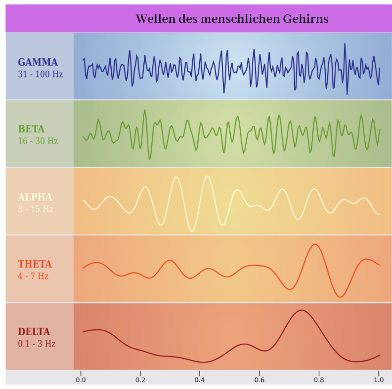

Allgemeine Infos

- Abhängig von Gehirnwellen
- 5 Gehirnwellenbereiche
- Gamma, Beta, Alpha, Theta, Dellta
Links
Gehirnwellen
Was passiert in den jeweiligen Gehirnwellenbereichen?

- Gamma = Panik, Stress; über 30Hz
- Beta = Wachzustand; 30-15Hz
- Alpha = Entspannt, Zwischen Wach und Schalf; 15-7Hz
- Theta = Schlaf mit Träumen; 7-3Hz
- Delta = Tiefschlaf; 3-0,1
Wie komme ich in einen anderen Bewusstseinszutand?
Grundsätzlich gelangen wir jeden Tag in die unterschiedlichen Bewusstseinszutände. Meistens jedoch unbewusst. Es gibt jedoch Möglichkeiten seinen Bewusstseinszutand zu ändern und live dabei zu sein.
- Meditation
- Frequenzen anhöhren = die Gehirnwellen passen sich an die Frequenz die man höhrt an
- Psychoaktive Substanzen
- Reizdeprivation = äußere Reize veringern, Verringerung der Stimulation des sensorischen Systems
- Bewusstes Träumen